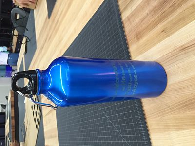
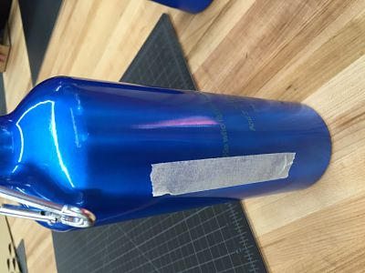
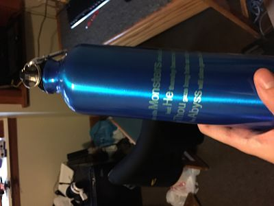
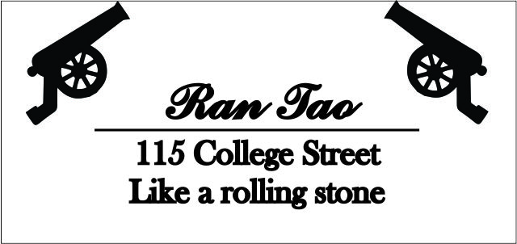
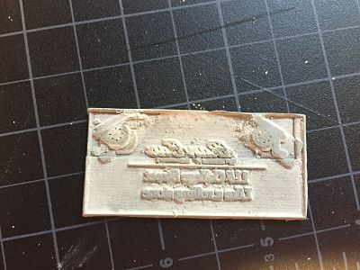
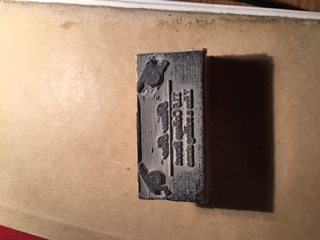

Week 5
This week we are exploring more with CorelDraw and Laser printing. The assignment is to create an engraving on a bottle and a personal stamp.
My design for the bottle is simply a quote from Nietzsche that I like a lot. The orginial file is here.
.jpg)
However, I messed up the settings and the laser cutter only cut through part of the paint.

Thus I put the tape alongside the first letter H, and try to manipulate the laser such that the cut fits the original.
The result is much better.
The second assignment is to make a stamp. The basic idea is to engrave on a 2.5" by 1" piece of rubber, and then glue the rubber to the bottom of a wooden base.
I design the stamp to have both the element of Arsenal and "Like a rolling stone".

And the product is this. You can see that the upper half is not clear. That is because I tried to reprint it on the same piece again to better the resolution. However, that didn't work.
After reprinting the image and cleaning up the excess rubber, I managed to better the stamp and here is the final product.
The original file is here.